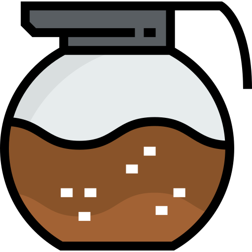
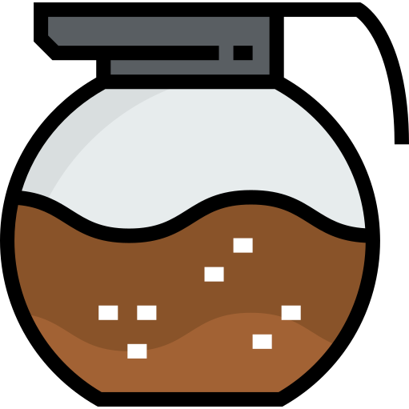
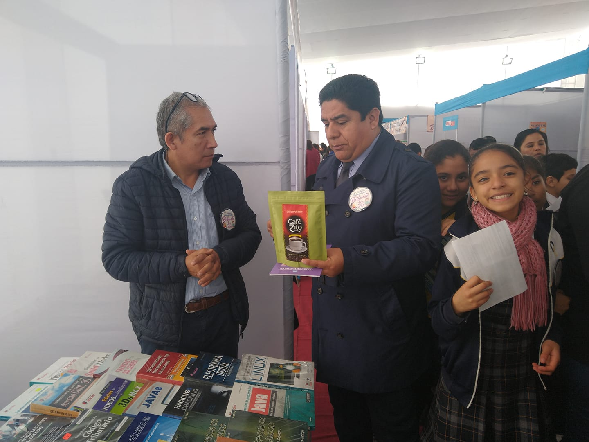
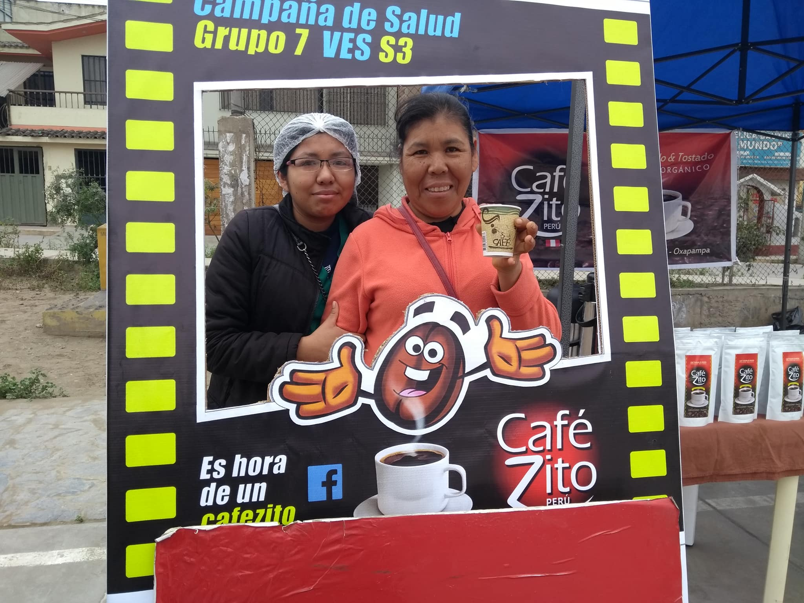
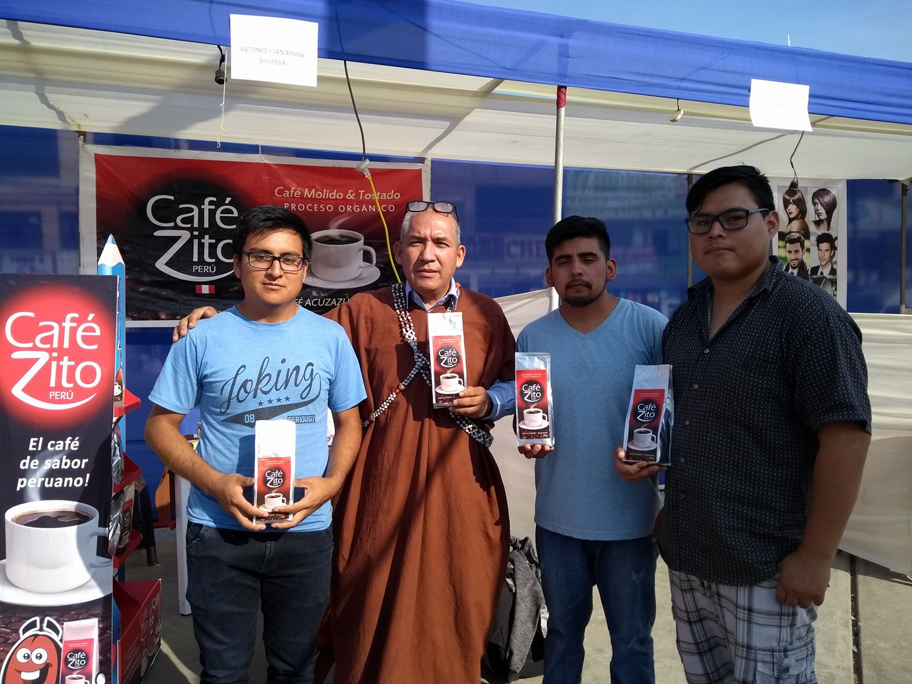
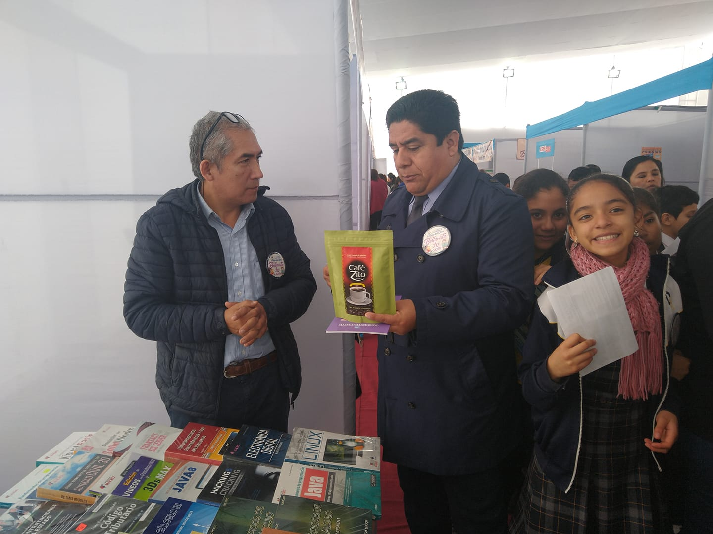
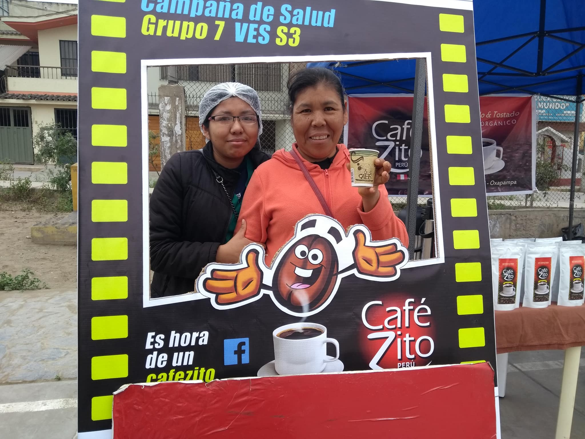
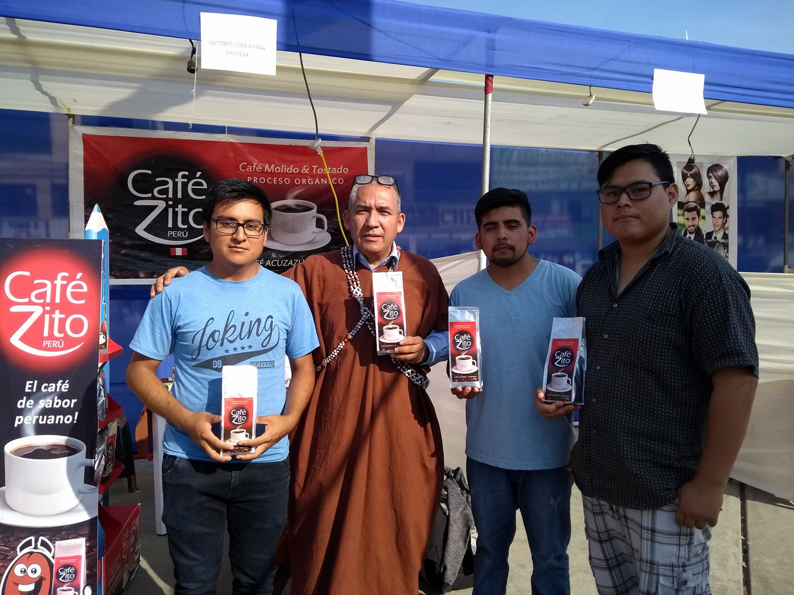

| 1 |
Frappuccino de Mocha |
- 1 taza de hielo.
- 1/3 de taza de café mocha o normal (opcional).
- 1/3 de taza de leche.
- 2 cucharadas de chocolate liquido.
|
- 1.Coge la licuadora e ingresa la cantidad total de hielos,
agrega también la cantidad indicada de café, azúcar, leche y chocolate líquido.
- 2.Licúa todos los ingredientes muy bien.
- 3.Coge un vaso y en la parte interna échale chorritos de chocolate líquido.
- 4.Agrega la mezcla licuada.
- 5.Para decorar agrega crema batida y en la parte superior añade un poco más de chocolate líquido.
|
| 2 |
Café frio |
- Vaso de 150ml
- 6 Cubos de hielo
- 20 ml de azúcar líquido
- Licuadora
- Café
- Colador
|
- 1.Enfría un vaso de 150 ml en freezer o heladera.
- 2.Prepara dos espressos en tazas de cappuccino o de un tamaño similar.
- 3.Pon los cubos de hielo, el azúcar y los dos cafés espresso, como último ingrediente, en la licuadora.
- 4.Mezcla durante 30 segundos, hasta que quede espeso como un frappé.
- 5.Retira el vaso del freezer, toma el colador y vierte la mezcla en él.
|
| 3 |
Café con leche |
- 2 tazas de café fuerte
- 2 tazas de leche caliente
- 1 cucharada de azúcar
- 4 ramitas de canela
|
- 1.Comienza mezclando en una jarra el café con leche con el azúcar.
- 2.Después, calienta las 4 tazas con agua caliente.
- 3.Sigue preparando tu bebida repartiendo el café con leche.
- 4.Coloca una ramita de canela en cada taza y listo.
|

.svg)

 



 




